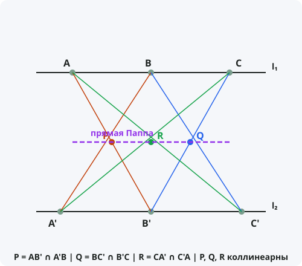

Теорема Паппа
Формулировка
Если на двух прямых взять по три точки: A, B, C на одной и A', B', C' на другой, то точки пересечения прямых AB' и A'B, BC' и B'C, CA' и C'A лежат на одной прямой. Эта прямая называется прямой Паппа.
Обозначения
Пусть даны две прямые l₁ и l₂.
На l₁ выбраны точки A, B, C.
На l₂ выбраны точки A', B', C'.
P = AB' ∩ A'B — пересечение первой пары.
Q = BC' ∩ B'C — пересечение второй пары.
R = CA' ∩ C'A — пересечение третьей пары.
Тогда точки P, Q, R лежат на одной прямой — прямой Паппа.

Доказательство
Теорема доказана.
Свойства прямой Паппа
- Теорема Паппа справедлива для любых двух прямых на плоскости (включая параллельные и пересекающиеся).
- Прямая Паппа — одна из самых известных линий в проективной геометрии.
- Конфигурация Паппа состоит из 9 точек и 9 прямых.
- Теорема Паппа является частным случаем теоремы Паскаля, когда коническое сечение вырождается в пару прямых.
Следствия из теоремы
- Теорема Паппа — основа для построения проективной геометрии.
- Из теоремы Паппа следует коммутативность умножения в теле, построенном по аксиомам проективной геометрии (теорема Паппа-Паскаля).
- Теорема Паппа обобщается на случай большего числа точек.
Примеры применения
Пример 1. На двух прямых выбраны по три точки. Докажите, что три точки пересечения соответственных прямых лежат на одной прямой.
Решение: Это прямая формулировка теоремы Паппа.
Пример 2. Что произойдёт, если прямые параллельны?
Решение: Теорема Паппа остаётся справедливой и для параллельных прямых. В этом случае конфигурация выглядит иначе, но коллинеарность сохраняется.
Пример 3. Как теорема Паппа связана с теоремой Дезарга?
Решение: В проективной геометрии теорема Дезарга и теорема Паппа — две фундаментальные теоремы. Из теоремы Паппа можно вывести теорему Дезарга (теорема Гессенберга).
Историческая справка
Теорема названа в честь древнегреческого математика Паппа Александрийского (около 290–350 гг. н.э.), который сформулировал её в своём труде «Математическое собрание» (Synagoge).
Папп был одним из последних великих математиков античности. Его «Математическое собрание» — важнейший источник сведений о древнегреческой математике.
Теорема Паппа была переоткрыта в XVII веке и стала одной из основ проективной геометрии наряду с теоремой Дезарга.
Интересные факты
- Конфигурация Паппа — одна из самых симметричных конфигураций в геометрии: 9 точек и 9 прямых, каждая прямая содержит 3 точки, через каждую точку проходят 3 прямые.
- Теорема Паппа — частный случай теоремы Паскаля, когда коническое сечение вырождается в две прямые.
- В проективной геометрии над полем теорема Паппа эквивалентна коммутативности умножения в этом поле.
- Теорема Паппа не зависит от аксиомы параллельности и справедлива как в евклидовой, так и в неевклидовых геометриях.
- С помощью теоремы Паппа можно построить проективную плоскость над любым полем.